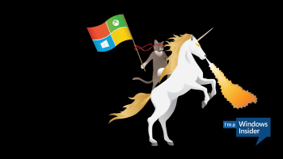
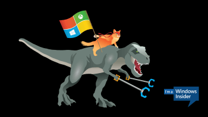

This is a very simple website to show some of the most popular Windows ninja cat styles.
This is the original artwork released from Microsoft. It features a brown ninja cat riding a white unicorn in a proud upright stance whilst waving a Microsoft flag.
This variation features the brown ninja cat adopting a low slung position riding a narwhal whale. The whale itself has an interesting addition of some bacon on its spear.
This variation features a ginger ninja cat adopting the low slung style whilst riding a TRex. The TRex curiously appears to be in possesion of some rubbish pickers.
These Microsoft cartoons were inspired by an orginal peice of artwork called 'Welcome to the internet' by Jason Heuser aka 'Sharpwriter'. This has a slightly more sinister feel in that the cat has a golden handgun to compliment the unicorn's fire. It is set against a backdrop of a pixelatted world featuring a raindbows, fire and a small sprite.
The Windows Insider community really used their imagination creating other variations of the theme like these, or this or this or this or this. There are plenty more on Twitter with #windows10 #ninjacat
You can download more images/ in various sizes and formats as well as creating your own ninja cat combinations. All the details are in the A fun surprise for Windows Insiders… blog article posted on the Blogging WIndows site just ahead of the Windows 10 launch.
During the pre-release programme for Windows 10 (known as the 'Windows Insiders' programme), Microsoft released some artwork that featured a ninja cat riding a fire breathing unicorn whilst waving a Microsoft flag.
The artwork went viral and several variations were created by the Windows Insider community. Which one is your favourite?
{kind=link}
{kind=link}
{kind=link}
{kind=link}